Galerie foto

 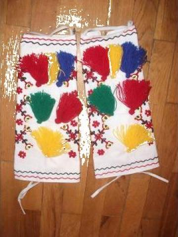
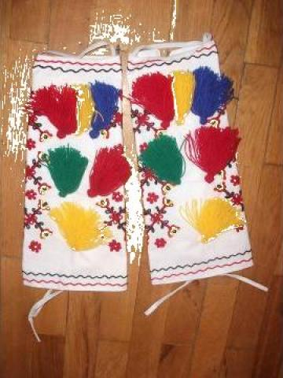


 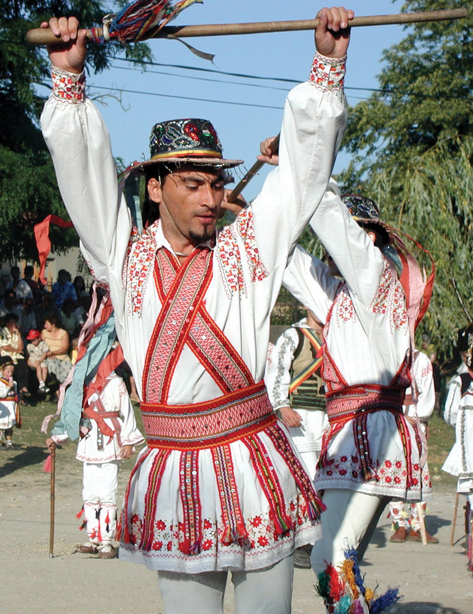
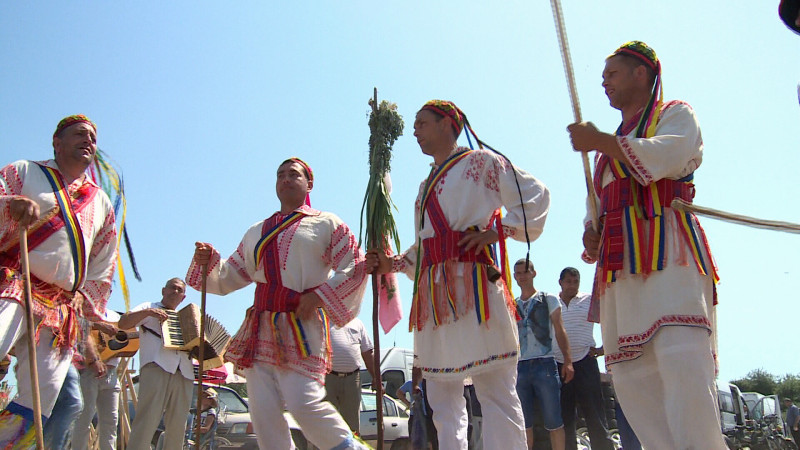
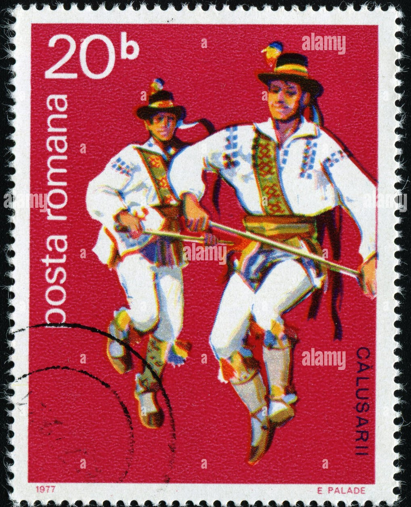
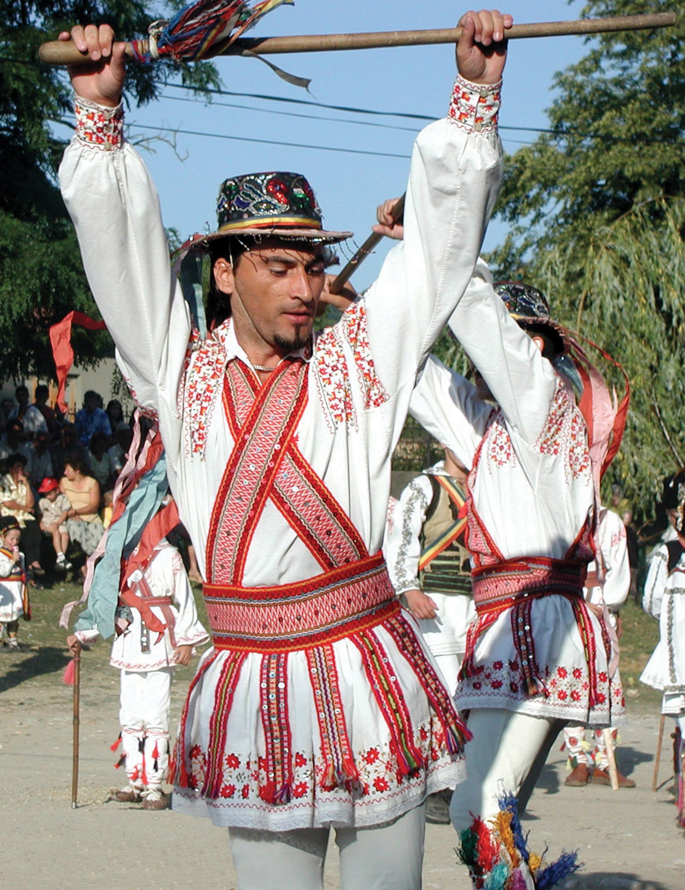
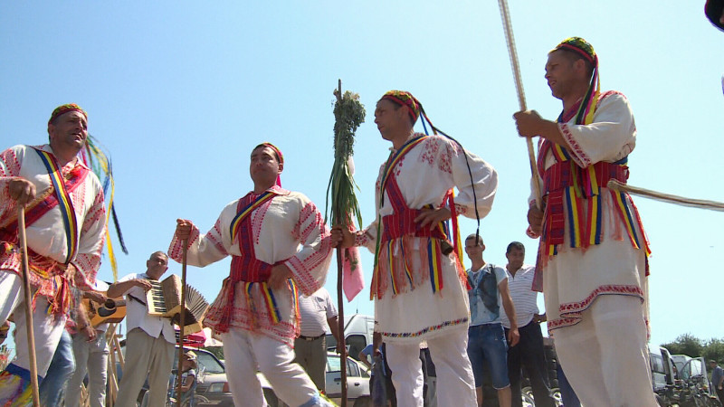
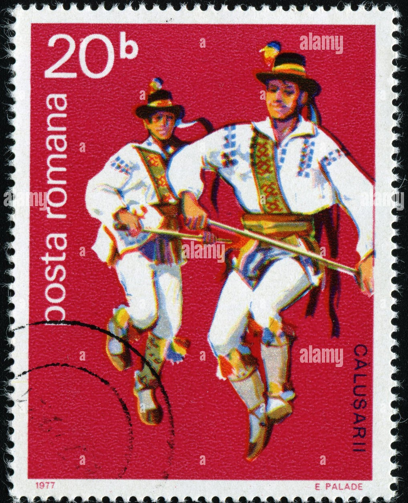
Călușul reprezintă una dintre cele mai enigmatice și spectaculoase expresii ale spiritualității românești, un dans ritualic ce îmbină dinamismul scenic cu sacralitatea originilor sale precreștine. Născut în inima Olteniei și practicat cu ocazia Rusaliilor, acest obicei transmite o forță ancestrală și o expresie culturală autentică, păstrată cu sfințenie de-a lungul generațiilor.
Rădăcinile călușului se regăsesc în străvechi credințe arhaice, având roluri de purificare, fertilitate și protecție împotriva spiritelor malefice. Dansul este asociat cu lupta simbolică împotriva "ielelor", creaturi mitice considerate periculoase. Ceata de călușari, condusă de vătaf, se supune unui ritual strict, bazat pe tăcere, loialitate și coordonare sacră a mișcărilor și simbolurilor purtate.
În diversele sale forme de manifestare, călușul a păstrat un set distinct de trăsături esențiale care îi conferă unicitate:
În anul 2005, Călușul a fost recunoscut de UNESCO ca parte a patrimoniului cultural imaterial al umanității, certificând importanța sa universală și valoarea sa istorică și etnografică pentru identitatea românească.
Călușul continuă să fie practicat activ în mai multe localități din Oltenia, printre care:
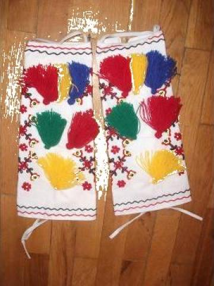
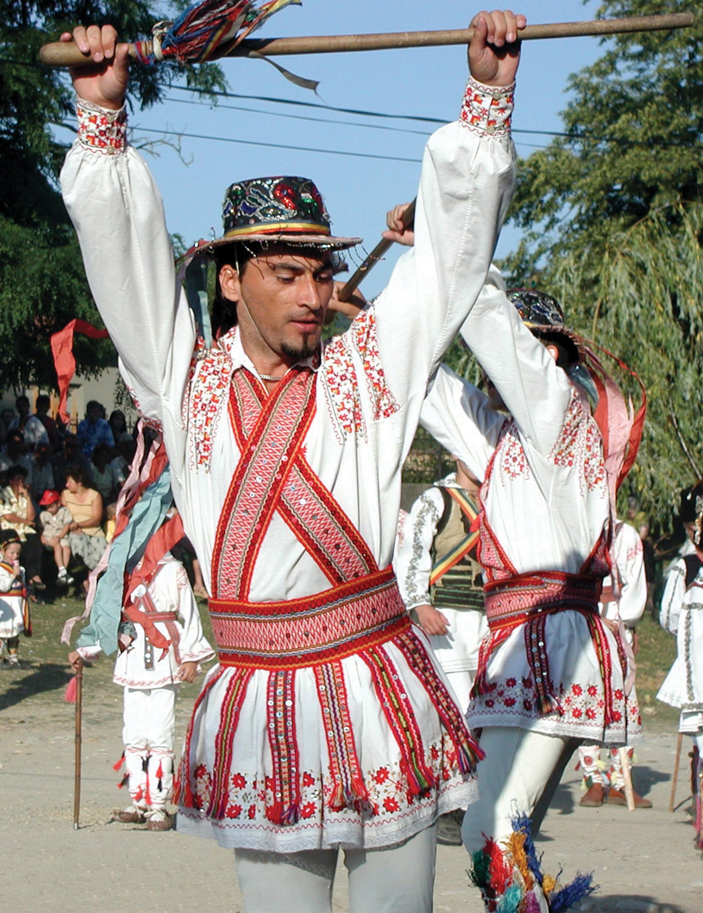
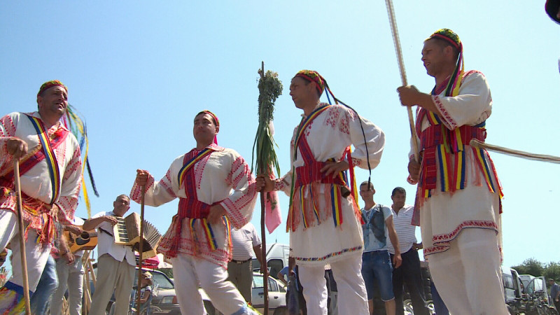
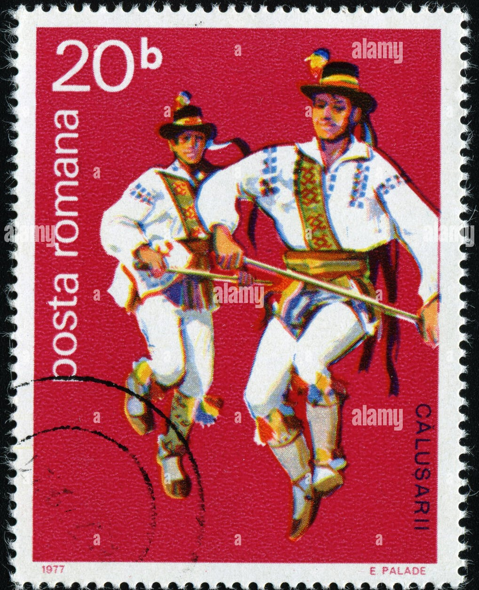